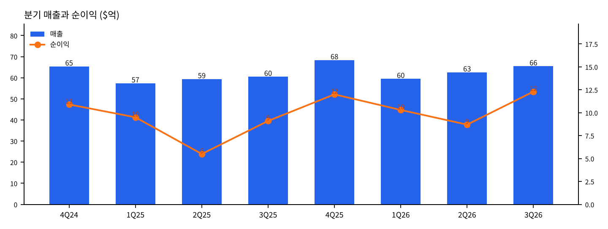
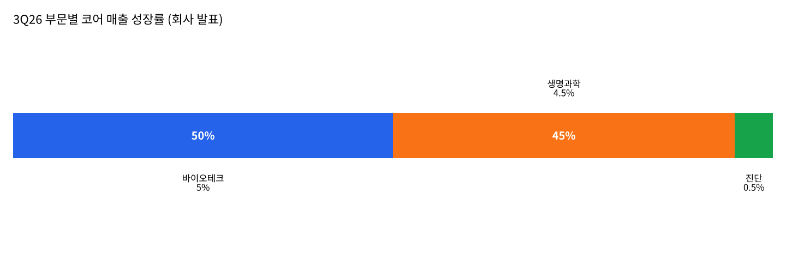
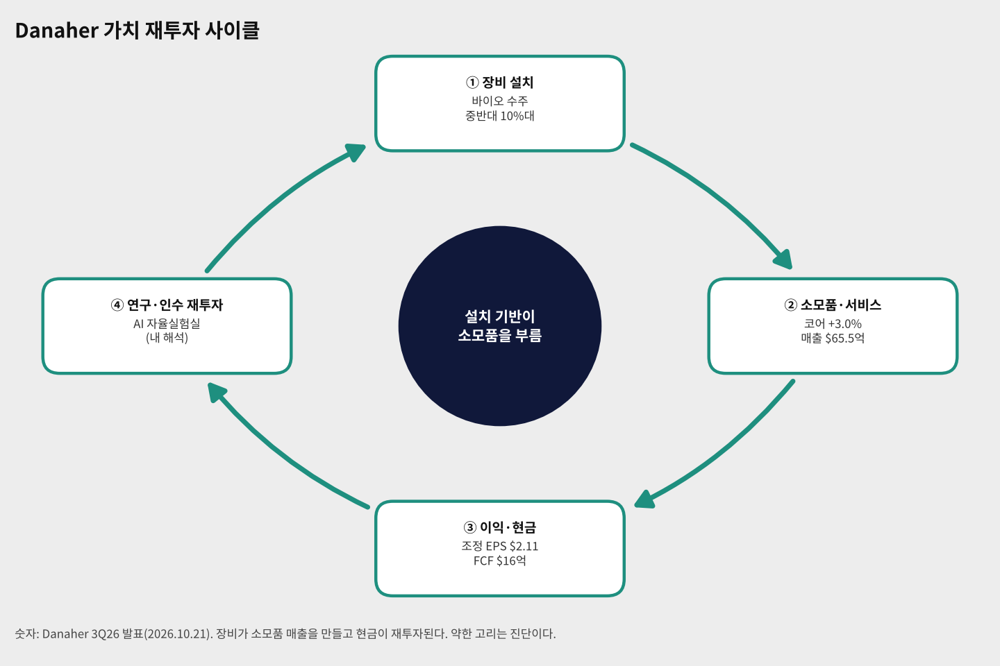

Danaher는 바이오 의약품 생산 장비·소모품, 연구용 기기, 진단 장비를 팔고 한번 설치한 장비에 소모품을 계속 판다.
| 항목 | 내용 |
|---|---|
| 종목 | Danaher (DHR) · NYSE · 헬스케어(생명과학·진단) · 워싱턴 D.C. |
| 최근 분기(3Q26) | 매출 $65.5억, 조정 EPS $2.11 |
| 부문 | 바이오테크, 생명과학, 진단 |
| 직원 수 | 약 60,000명(트레이딩뷰) |
| 멀티플 | PER·PEG·P/S는 08~10 항목 표 참조 |
| 직책 | 인물 | 역할·특징 |
|---|---|---|
| CEO | 줄리 소여 몬트고메리(Julie Sawyer Montgomery) | 이번 분기가 CEO로서 첫 분기 |
| CFO | (확인 필요) | 회사 공개 자료 기준 확인 필요 |
경영 스타일: 지속 개선 문화. 사업 시스템으로 비용과 운영을 꾸준히 손보는 방식이다.
AI와 자동화로 실험을 돌리는 연구실을 협업 사례로 소개했다.
4Q 코어(호흡기 제외) +4~5%, 2027도 4~5%로 시작한다고 전망했다.
다음 실적발표는 세 가지 질문에 답하는 자리다.
1. 바이오프로세싱 수주가 이어지나?
2. 진단 부문이 호흡기 부진을 벗어나나?
3. 신임 CEO가 코어 4~5%를 지키나?
한 줄 판정 규칙: 첫 질문(바이오프로세싱 수주)이 이어지면 약한 고리(코어 성장)가 풀린다고 본다.
일정: 4Q26 실적은 2027.01.27 발표 예정이다. FY27 가이던스도 이때 나올 수 있다(확인 필요).
| 분기 | 매출 | 순이익 | EPS | 조정 EPS | 특이 사항 |
|---|---|---|---|---|---|
| 4Q24 | $65.4억 | $10.9억 | 1.49 | 2.14 | |
| 1Q25 | $57.4억 | $9.5억 | 1.32 | 1.88 | |
| 2Q25 | $59.4억 | $5.5억 | 0.77 | 1.80 | |
| 3Q25 | $60.5억 | $9.1억 | 1.27 | 1.89 | |
| 4Q25 | $68.4억 | $12.0억 | 1.68 | 2.23 | |
| 1Q26 | $59.5억 | $10.3억 | 1.45 | 2.06 | |
| 2Q26 | $62.6억 | $8.7억 | 1.23 | 1.94 | |
| 3Q26 | $65.5억 | $12.3억 | 1.75 | 2.11 | 코어 +3.0%, 신임 CEO 첫 분기 |
매출은 트레이딩뷰 스캐너의 분기 총매출이라 회사가 발표한 순매출과 다를 수 있다. 매출·순이익·EPS(GAAP 희석)는 트레이딩뷰 스캐너, 조정 EPS는 트레이딩뷰 실적 페이지의 Reported 값이다. 분기 정렬은 오래된 분기→최신이다.

흐름 요약: 최근 분기 매출은 $65.5억로 전년 동기 $60.5억 대비 +8.3%, 순이익은 $12.3억(전년 $9.1억)다. 최근 4분기 GAAP EPS는 $6.11, 조정 EPS는 $8.34다.
| 부문 | 내용 | 3Q26 코어 성장 | 비고 |
|---|---|---|---|
| 바이오테크 | 바이오프로세싱 등 | +5% | 수주 중반대 10%대 |
| 생명과학 | 연구용 기기 | +4.5% | |
| 진단 | 진단 장비·시약 | +0.5% | 호흡기 제외 +7% |

부문별 매출 금액은 이 보고서에 수집하지 않아 코어 성장률로 대신 비교했다. 바이오테크가 가장 강하고 진단이 가장 약하다.
Danaher는 과학·진단 장비와 소모품으로 사람의 건강을 개선하는 것을 목표로 한다.
| 축 | 내용 |
|---|---|
| 제품 | 바이오프로세싱·연구 기기·진단 |
| 현금 | 3Q 잉여현금흐름 $16억 |
| 기술 | AI 자율실험실 |

| 이동평균 | 값 | 종가 대비 | 위치 |
|---|---|---|---|
| 5일선 | $229.89 | -0.6% | 종가 아래 |
| 20일선 | $231.70 | -1.3% | 종가 아래 |
| 50일선 | $223.84 | +2.1% | 종가 위 |
| 100일선 | $212.94 | +7.3% | 종가 위 |
| 200일선 | $201.12 | +13.7% | 종가 위 |
52주 고가 $242.80(2026-01-22)·저가 $160.93(2026-05-15) 범위에서 종가 $228.58는 50일선, 100일선, 200일선을 웃돌고 5일선, 20일선은 밑돈다.
| 규칙 | 기준 | 현재 값 | 신호 |
|---|---|---|---|
| 장기 추세 필터 | 종가 vs 200일선 | $228.58 > $201.12 | 매수 |
| 중장기 교차 | 50일선 vs 200일선 | $223.84 > $201.12 | 매수 |
| 단기 교차 | 20일선 vs 50일선 | $231.70 > $223.84 | 매수 |
| 돈키언 채널 | 55일 고가 $238.46 / 저가 $199.09 | 중간값 $218.78 위 | 매수 |
| 1개월 모멘텀 | 21거래일 수익률 | +1.9% (기준 $224.24) | 매수 |
| 3개월 모멘텀 | 63거래일 수익률 | +5.9% (기준 $215.91) | 매수 |
| 6개월 모멘텀 | 126거래일 수익률 | +33.6% (기준 $171.12) | 매수 |
| 12개월 모멘텀 | 252거래일 수익률 | +3.7% (기준 $220.44) | 매수 |
| 종합 (8개 평균) | +1.00 | 강한 매수 |
해석: 매수 신호 8개(장기 추세 필터, 중장기 교차, 단기 교차, 돈키언 채널, 1개월 모멘텀, 3개월 모멘텀, 6개월 모멘텀, 12개월 모멘텀), 매도 신호 0개(없음). CTA 점수 +1.00(강한 매수). 14일 ATR $6.26 (2.7%), 52주 고가 $242.80 · 저가 $160.93.
| 가격 | 기준 | 무엇이 바뀌나 |
|---|---|---|
| $238.46 | 55일 고가 | 돌파 시 채널 상단 갱신 |
| $224.24 | 1개월 모멘텀 기준가 | 종가가 이 가격 위면 1개월 신호 매수 |
| $220.44 | 12개월 모멘텀 기준가 | 종가가 이 가격 위면 12개월 신호 매수 |
| $218.78 | 돈키언 중간값 | 55일 채널 중간값 위/아래로 신호가 바뀜 |
| $215.91 | 3개월 모멘텀 기준가 | 종가가 이 가격 위면 3개월 신호 매수 |
| $201.12 | 200일선 | 종가가 이 선 위/아래인지로 장기 추세 신호가 바뀜 |
| $199.09 | 55일 저가 | 이탈 시 채널 하단 갱신 |
| $171.12 | 6개월 모멘텀 기준가 | 종가가 이 가격 위면 6개월 신호 매수 |
가격 수준은 신호가 바뀌는 기준선일 뿐 진입·청산 가격 제안이 아니다. 20일/50일 교차는 이동평균 자체가 움직여 단일 가격으로 표시하지 않았다. 일봉·주봉은 종가 기준 직접 계산(고저 데이터 미사용)이다.
| 악재 요인 | 내용 | 강도 |
|---|---|---|
| 진단 부진 | 진단 코어 +0.5%, 호흡기 -650bp | 중간 |
| 성장 속도 | 코어 +3.0%로 한 자릿수 초반 | 중간 |
| CEO 교체 | 신임 CEO 첫 분기 | 참고 |
| 티커 | 회사 | PER(TTM) | PEG | P/S | EPS 성장(YoY) |
|---|---|---|---|---|---|
| DHR | Danaher | 27.4배 | 3.35 | 6.28배 | +8% |
| TMO | Thermo Fisher | 36.5배 | 3.81 | 5.38배 | +10% |
| A | Agilent | 34.9배 | 1.77 | 6.61배 | +19% |
| MTD | Mettler-Toledo | 37.6배 | 2.46 | 8.17배 | +15% |
| ABT | Abbott | 38.6배 | – | 3.77배 | -66% |
비교 결론: Danaher의 PER 27.4배는 Thermo Fisher·Agilent·Mettler-Toledo·Abbott보다 낮다. PEG 3.35는 Thermo Fisher(3.81)보다 낮고 Agilent(1.77)·Mettler-Toledo(2.46)보다 높다.
현금·부채는 트레이딩뷰 스캐너 값이다. 영업현금흐름과 잉여현금흐름이 크다.
| 지표 | 값 | 출처 | 해석 |
|---|---|---|---|
| 현금·단기투자 | $57억 | 트레이딩뷰 스캐너(최근 분기) | |
| 총부채 | $278억 | 트레이딩뷰 스캐너(최근 분기) | |
| 순부채(부채−현금) | $221억 | 내 계산 | 현금 대비 부채 부담 |
| 잉여현금흐름(TTM) | $57억 | 트레이딩뷰 스캐너 | |
| TTM 매출 | $256억 | 트레이딩뷰 스캐너 |
| 기준 | 매출 | P/S | 비고 |
|---|---|---|---|
| 내 계산(종가 ÷ 최근 4분기 매출 합계) | $256.0억 | 6.28배 | 시총은 정렬용 데이터에서만 사용 |
| 동종(트레이딩뷰) | – | TMO 5.38배 · A 6.61배 · MTD 8.17배 · ABT 3.77배 | 11.19 |
해석: 분기 잉여현금흐름 $16억이 부채 상환과 인수 재원이 된다(내 해석).
EBITDA는 영업활동의 현금 창출력을 보는 지표이고, PEG는 PER을 EPS 성장률로 나눈 값이다. EBITDA·FCF는 트레이딩뷰 TTM 값이다.
| 지표 | 값 | 산출 |
|---|---|---|
| EBITDA(TTM) | $80억 | 트레이딩뷰 스캐너 |
| EBITDA 마진 | 31.2% | EBITDA ÷ TTM 매출(내 계산) |
| FCF 마진 | 22.3% | FCF ÷ TTM 매출(내 계산) |
| PER(GAAP TTM) | 37.4배 | $228.58 ÷ $6.11 |
| PER(조정 TTM) | 27.4배 | $228.58 ÷ $8.34 |
| 방식 | PER | EPS 성장률 | PEG | 판정 |
|---|---|---|---|---|
| 조정 EPS (TTM $8.34) | 27.4배 | +8% ($7.71 → $8.34) | 3.35 | 기준 초과 |
| GAAP EPS (TTM $6.11) | 37.4배 | +26% ($4.85 → $6.11) | 1.44 | 기준 초과 |
판정: 조정 EPS 기준 PEG 3.35 → 1.0 초과 PEG 기준은 1.0 이하 투자 적격, 0.5 이하 적극 매수다. EPS 성장률은 최근 4분기 EPS 합계를 직전 4분기 합계와 비교한 값(내 계산)이고, 일회성 항목이 있으면 조정 EPS 행을 함께 본다.

Danaher의 사이클: 장비 설치가 소모품 매출과 현금을 만들고 그 돈이 연구·인수에 재투자돼 다음 장비 수요를 만든다.
| 고리 | 현재 숫자·근거 |
|---|---|
| ① 장비 설치 | 바이오프로세싱 수주 중반대 10%대 |
| ② 소모품·서비스 | 매출 $65.5억(+8.5%) · 코어 +3.0% |
| ③ 이익·현금 | 조정 EPS $2.11(+11.5%) · FCF $16억 |
| ④ 연구·인수 재투자 | 연구·인수 금액은 보고서에 없음(내 해석) |
사이클의 특징: 약한 고리는 진단 코어 성장이다(+0.5%). "(내 해석)"은 보고서 수치가 아닌 해석이다.